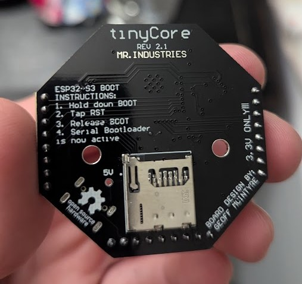

How to use SD Cards on the tinyCore¶
Created: December 30, 2025 Owner: Geoff McIntyre
Are you skipping ahead?
Make sure you have already installed the custom tinyCore board library and setup your Arduino IDE using the Get Started tutorial!
Okay, but first:
Why would I need an SD card?¶
Great question! The tinyCore has limited onboard memory, which is fine for running programs, but what if you want to save data for later? Maybe you're logging sensor readings, saving user settings, or just want to store a bunch of cat pictures. (No judgment.)
An SD card gives your tinyCore external storage that persists even after power is removed. You can pop the card into your computer later to analyze, graph, or back up your data.

The tinyCore has a built-in microSD card slot that supports cards up to 32GB (FAT32 formatted). That's a lot of sensor readings.
Example 1: Initializing the SD Card¶
Before we can read or write anything, we need to make sure the SD card is actually there and working. This example will check for the card and print some info about it.
The Code¶
Download or copy the example program below:
#include "FS.h"
#include "SD.h"
#include "SPI.h"
void setup() {
Serial.begin(115200);
while (!Serial) {
delay(10);
}
Serial.println("Initializing SD card...");
// Initialize the SD card
if (!SD.begin()) {
Serial.println("Card Mount Failed!");
Serial.println("Make sure a FAT32 formatted SD card is inserted.");
return;
}
Serial.println("SD Card mounted successfully!");
// Check what type of card is inserted
uint8_t cardType = SD.cardType();
if (cardType == CARD_NONE) {
Serial.println("No SD card attached");
return;
}
Serial.print("SD Card Type: ");
if (cardType == CARD_MMC) {
Serial.println("MMC");
} else if (cardType == CARD_SD) {
Serial.println("SDSC");
} else if (cardType == CARD_SDHC) {
Serial.println("SDHC");
} else {
Serial.println("UNKNOWN");
}
// Print the card size
uint64_t cardSize = SD.cardSize() / (1024 * 1024);
Serial.print("SD Card Size: ");
Serial.print(cardSize);
Serial.println(" MB");
Serial.println("You're all set!");
}
void loop() {
// Nothing to do here
}
What's Happening?¶
Let's break down the key parts:
The Includes:
#include "FS.h" // File System library
#include "SD.h" // SD card library
#include "SPI.h" // SPI communication (how we talk to the SD card)
Mounting the Card:
TheSD.begin() function initializes communication with the SD card. If it returns false, something went wrong. Usually the card isn't inserted or isn't formatted correctly.
Checking Card Type:
The SD.cardType() function tells you what kind of card you have. Most modern cards are SDHC (Secure Digital High Capacity).
Try It Out!¶
- Insert a FAT32 formatted microSD card into the tinyCore
- Flash the program to your board
- Open the Serial Monitor at
115200 baud - You should see your card info printed!
Formatting your SD Card
Make sure your SD card is formatted as FAT32. On Windows, right-click the drive and select "Format". On Mac, use Disk Utility. Cards larger than 32GB may need a third-party tool to format as FAT32.
Example 2: Writing to a File¶
Now let's actually save something! This example writes a simple message to a text file.
The Code¶
#include "FS.h"
#include "SD.h"
#include "SPI.h"
void setup() {
Serial.begin(115200);
while (!Serial) {
delay(10);
}
// Initialize SD card
if (!SD.begin()) {
Serial.println("Card Mount Failed!");
return;
}
Serial.println("SD Card mounted!");
// Create and open a file for writing
File myFile = SD.open("/hello.txt", FILE_WRITE);
if (myFile) {
Serial.println("Writing to hello.txt...");
myFile.println("Hello from tinyCore!");
myFile.println("This is my first SD card file.");
myFile.println("Pretty cool, right?");
myFile.close(); // Always close the file when done!
Serial.println("Done! File saved.");
} else {
Serial.println("Error opening file for writing");
}
}
void loop() {
// Nothing here
}
What's Happening?¶
Opening a File:
This creates (or overwrites) a file calledhello.txt in the root directory of the SD card. The / at the beginning means "root directory."
Writing Data:
Just likeSerial.println(), but it writes to the file instead of the Serial Monitor. You can also use myFile.print() for text without a newline.
Closing the File:
This is crucial! If you don't close the file, your data might not actually be saved. Always close your files.Try It Out!¶
- Flash the program
- Open Serial Monitor to confirm it worked
- Remove the SD card and plug it into your computer
- Open
hello.txtand see your message!
Example 3: Reading from a File¶
What good is saving data if you can't view it? Let's read that file we just created.
The Code¶
#include "FS.h"
#include "SD.h"
#include "SPI.h"
void setup() {
Serial.begin(115200);
while (!Serial) {
delay(10);
}
// Initialize SD card
if (!SD.begin()) {
Serial.println("Card Mount Failed!");
return;
}
Serial.println("SD Card mounted!");
// Open the file for reading
File myFile = SD.open("/hello.txt");
if (myFile) {
Serial.println("Reading from hello.txt:");
Serial.println("------------------------");
// Read and print each character until end of file
while (myFile.available()) {
Serial.write(myFile.read());
}
Serial.println("------------------------");
myFile.close();
} else {
Serial.println("Error opening file for reading");
Serial.println("Did you run the Write example first?");
}
}
void loop() {
// Nothing here
}
What's Happening?¶
Opening for Reading:
Notice we didn't specifyFILE_WRITE this time. By default, SD.open() opens files in read mode.
Reading the Contents:
myFile.available() returns how many bytes are left to read. myFile.read() grabs one byte at a time. We use Serial.write() instead of Serial.print() because we're outputting raw bytes.
Try It Out!¶
Make sure you've run Example 2 first so there's a file to read! Then flash this program and watch your message appear in the Serial Monitor.
Example 4: Appending to a File¶
Sometimes you don't want to overwrite a file—you want to add to it. This is especially useful for data logging.
The Code¶
#include "FS.h"
#include "SD.h"
#include "SPI.h"
int bootCount = 0;
void setup() {
Serial.begin(115200);
while (!Serial) {
delay(10);
}
// Initialize SD card
if (!SD.begin()) {
Serial.println("Card Mount Failed!");
return;
}
Serial.println("SD Card mounted!");
// Open file in APPEND mode
File logFile = SD.open("/bootlog.txt", FILE_APPEND);
if (logFile) {
// Get a simple "timestamp" (milliseconds since boot)
unsigned long timestamp = millis();
logFile.print("Device booted at ");
logFile.print(timestamp);
logFile.println(" ms");
logFile.close();
Serial.println("Boot logged successfully!");
} else {
Serial.println("Error opening file");
}
// Now let's read back all the boot entries
Serial.println("\nAll boot entries:");
Serial.println("------------------");
File readFile = SD.open("/bootlog.txt");
if (readFile) {
while (readFile.available()) {
Serial.write(readFile.read());
}
readFile.close();
}
}
void loop() {
// Nothing here
}
What's Happening?¶
Append Mode:
FILE_APPEND is the magic word here. Instead of overwriting the file, new data gets added to the end.
Try It Out!¶
Flash this program, then press the reset button a few times. Each time the tinyCore boots, it adds a new entry to the log. Watch the list grow in the Serial Monitor!
Example 5: CSV Data Logging¶
Our final example is probably the most useful imo; Logging sensor data in CSV format so you can analyze it in Excel, Google Sheets, or Python. We'll log random "sensor" values to keep it simple, but you can swap in real sensor readings, or use the IMU!
The Code¶
#include "FS.h"
#include "SD.h"
#include "SPI.h"
File dataFile;
const char* FILENAME = "/sensor_data.csv";
unsigned long lastLogTime = 0;
const unsigned long LOG_INTERVAL = 1000; // Log every 1 second
int readingCount = 0;
void setup() {
Serial.begin(115200);
while (!Serial) {
delay(10);
}
// Initialize SD card
if (!SD.begin()) {
Serial.println("Card Mount Failed!");
return;
}
Serial.println("SD Card mounted!");
// Check if file exists to decide whether to write header
bool fileExists = SD.exists(FILENAME);
// Open file for appending
dataFile = SD.open(FILENAME, FILE_APPEND);
if (!dataFile) {
Serial.println("Error opening data file!");
return;
}
// Write CSV header if this is a new file
if (!fileExists) {
dataFile.println("timestamp_ms,reading_number,temperature,humidity,pressure");
Serial.println("Created new CSV file with header");
} else {
Serial.println("Appending to existing CSV file");
}
Serial.println("\nLogging started! Data format:");
Serial.println("timestamp_ms,reading_number,temperature,humidity,pressure");
Serial.println("Press reset to stop logging.\n");
}
void loop() {
unsigned long currentTime = millis();
// Log data at the specified interval
if (currentTime - lastLogTime >= LOG_INTERVAL) {
lastLogTime = currentTime;
readingCount++;
// Generate some fake sensor data (replace with real sensors!)
float temperature = 20.0 + random(-50, 50) / 10.0; // 15.0 to 25.0
float humidity = 50.0 + random(-100, 100) / 10.0; // 40.0 to 60.0
float pressure = 1013.0 + random(-50, 50) / 10.0; // 1008.0 to 1018.0
// Create CSV line
String dataLine = String(currentTime) + "," +
String(readingCount) + "," +
String(temperature, 2) + "," +
String(humidity, 2) + "," +
String(pressure, 2);
// Write to SD card
dataFile.println(dataLine);
dataFile.flush(); // Make sure data is written immediately
// Also print to Serial for monitoring
Serial.println(dataLine);
// Stop after 60 readings (1 minute) to save your SD card
if (readingCount >= 60) {
dataFile.close();
Serial.println("\n60 readings logged. File closed.");
Serial.println("Remove SD card and check your data!");
while (1) { delay(1000); } // Stop the loop
}
}
}
What's Happening?¶
Checking if File Exists:
We only want to write the CSV header once. By checking if the file already exists, we can skip the header on subsequent runs.CSV Header:
This creates the column names for your spreadsheet. Each column is separated by a comma.Building the Data Line:
String dataLine = String(currentTime) + "," +
String(readingCount) + "," +
String(temperature, 2) + "," + ...
String(value, 2) syntax limits floats to 2 decimal places.
Flushing the Buffer:
This forces the data to actually write to the SD card immediately, rather than waiting in a buffer. Important for data logging—you don't want to lose data if power is cut!Try It Out!¶
- Flash the program
- Let it run for about a minute (60 readings)
- Remove the SD card and open
sensor_data.csvin Excel or Google Sheets - Try graphing your data!

Example 6: Delete and List Files¶
Sometimes you need to clean up. This example shows how to list all files in a directory and delete files you don't need.
The Code¶
#include "FS.h"
#include "SD.h"
#include "SPI.h"
void setup() {
Serial.begin(115200);
while (!Serial) {
delay(10);
}
if (!SD.begin()) {
Serial.println("Card Mount Failed!");
return;
}
Serial.println("SD Card mounted!\n");
// List all files in root directory
Serial.println("Files on SD card:");
Serial.println("------------------");
listDir("/");
Serial.println("------------------\n");
// Delete a specific file (uncomment to use)
// deleteFile("/hello.txt");
// Delete all .txt files (uncomment to use)
// deleteAllTxtFiles("/");
}
void listDir(const char* dirname) {
File root = SD.open(dirname);
if (!root || !root.isDirectory()) {
Serial.println("Failed to open directory");
return;
}
File file = root.openNextFile();
while (file) {
if (file.isDirectory()) {
Serial.print(" [DIR] ");
Serial.println(file.name());
} else {
Serial.print(" ");
Serial.print(file.name());
Serial.print(" (");
Serial.print(file.size());
Serial.println(" bytes)");
}
file = root.openNextFile();
}
}
void deleteFile(const char* path) {
Serial.print("Deleting file: ");
Serial.println(path);
if (SD.remove(path)) {
Serial.println("File deleted successfully");
} else {
Serial.println("Delete failed - file may not exist");
}
}
void deleteAllTxtFiles(const char* dirname) {
File root = SD.open(dirname);
if (!root || !root.isDirectory()) {
return;
}
File file = root.openNextFile();
while (file) {
if (!file.isDirectory()) {
String filename = String(file.name());
if (filename.endsWith(".txt")) {
String fullPath = String(dirname) + filename;
file.close(); // Close before deleting
SD.remove(fullPath.c_str());
Serial.print("Deleted: ");
Serial.println(fullPath);
}
}
file = root.openNextFile();
}
}
void loop() {
// Nothing here
}
Key Functions¶
| Function | Description |
|---|---|
SD.exists(path) |
Check if a file exists |
SD.remove(path) |
Delete a file |
SD.mkdir(path) |
Create a directory |
SD.rmdir(path) |
Remove an empty directory |
file.isDirectory() |
Check if entry is a folder |
file.name() |
Get the filename |
file.size() |
Get file size in bytes |
Quick Reference¶
Here's a cheat sheet of the most common SD card operations:
// === SETUP ===
#include "FS.h"
#include "SD.h"
#include "SPI.h"
SD.begin(); // Initialize SD card
// === FILE OPERATIONS ===
SD.open("/file.txt", FILE_WRITE); // Create/overwrite file
SD.open("/file.txt", FILE_APPEND); // Append to file
SD.open("/file.txt"); // Open for reading (default)
// === WRITING ===
file.print("text"); // Write without newline
file.println("text"); // Write with newline
file.flush(); // Force write to card
file.close(); // Close file (important!)
// === READING ===
file.available(); // Bytes remaining to read
file.read(); // Read one byte
file.readString(); // Read entire file as String
// === FILE MANAGEMENT ===
SD.exists("/file.txt"); // Check if file exists
SD.remove("/file.txt"); // Delete file
SD.mkdir("/folder"); // Create directory
SD.rmdir("/folder"); // Remove empty directory
Troubleshooting¶
Card Mount Failed!
- Make sure the SD card is properly inserted
- Ensure the card is formatted as FAT32
- Try a different SD card (some cards are incompatible)
- Check that your card is 32GB or smaller
File won't open for writing
- Check that the filename starts with
/ - Ensure you're not trying to write to a read-only card
- Make sure the card isn't full
Data seems corrupted or incomplete
- Always call
file.flush()after writing important data - Always call
file.close()when done - Don't remove the SD card while the program is running
I can write but not read
- Make sure you closed the file after writing before trying to read
- Check that you're using the correct filename (case-sensitive!)
Final Thoughts¶
You now have all the tools you need to save and load data on your tinyCore! Some project ideas:
- Temperature logger – Log readings every minute for a week
- GPS tracker – Save coordinates to review your route later
- Game save system – Save high scores or game state
- Configuration file – Store settings that persist across reboots
The possibilities are endless. Now go fill up that SD card!
Having trouble?
Send us an email at support@mr.industries or join our Discord for help!